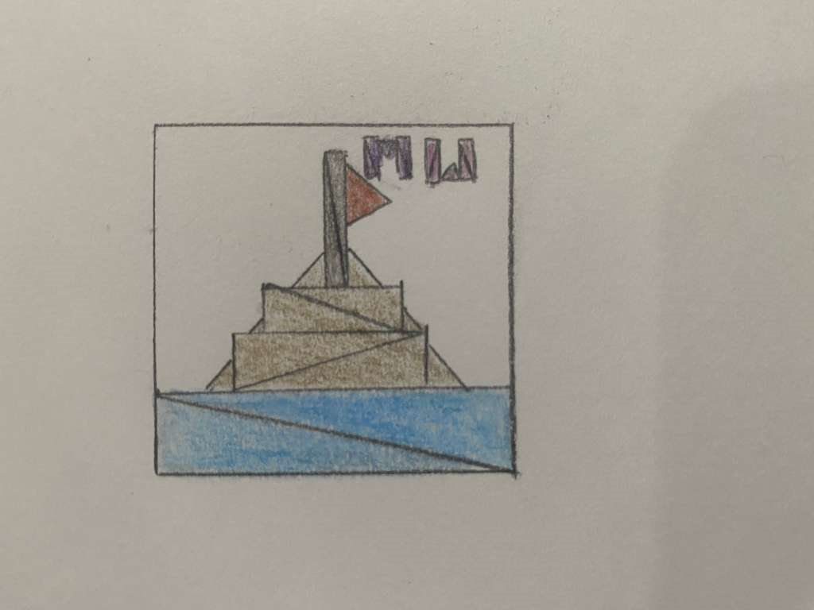

Mia Wong
ywong41@ucsc.edu
Notes to Grader: /
Drawing Mode:
Shape Color:
Red Green BlueShape Size:
(Circles) Segment Count:Description: A solitary boat sails the dark, endless ocean, ghostly and free, inspired by my adventures in Sea of Thieves.
